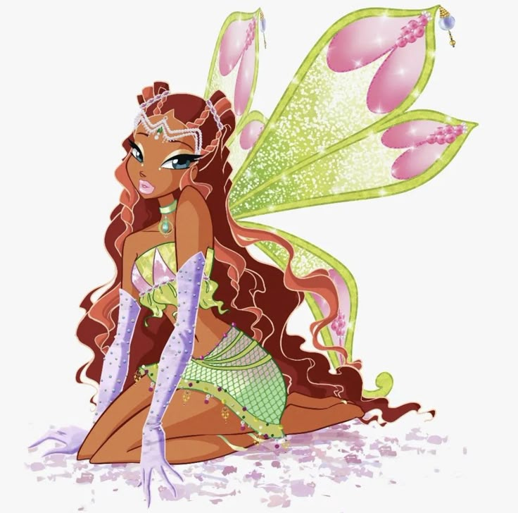

Лейла — смелая, активная и спортивная фея, обладающая силой воды, движения и внутренней энергии.
Лейла, также известная как Аиша, родом с планеты Андрос. Она очень спортивная, выносливая и уверенная в себе фея, которая не боится трудностей и всегда готова действовать. Её магические способности связаны с водой, движением и пластичной энергией. Лейла умеет быстро принимать решения и проявляет настоящую силу характера в опасных ситуациях. Она является надёжной подругой и ценным членом команды Винкс.